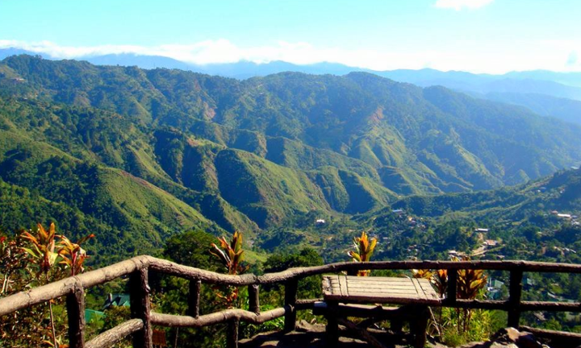
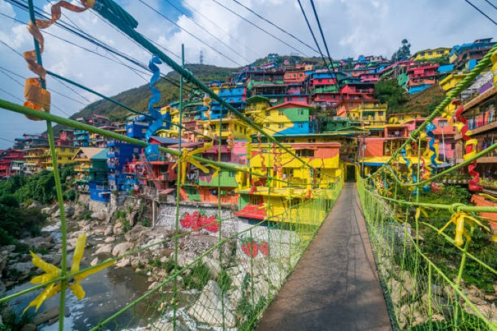

Welcome to Baguio
Baguio, often called the "Summer Capital of the Philippines," is a city nestled in the mountains of Northern Luzon. Known for its cool climate, Baguio offers a refreshing escape from the tropical heat. The city is famous for its lush pine forests, scenic views, and charming spots like Burnham Park, Mines View Park, and the colorful St. Louis University Campus. It is also home to historic sites such as the Baguio Cathedral and The Mansion, the official summer residence of the Philippine President. The city's vibrant local culture and delicious strawberries make it a popular destination year-round.
 